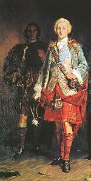

If you had seen my Charlie
Broadside ballad Harding B15(40b)
Tune: recorded at Dunloy Co Antrim (Northern Ireland)as sung by "Steeleye Span" in "Please to see the King" in 1971
Tune (MIDI)
Sequenced by Ch.Souchon


|
VERSION 1 (Steeleye Span)
3a. If you had seen my Charlie At the head of an army He was a gallant sight to behold With his fine tartan hose On his bonnie round leg And his buckles of pure shining gold The tartan my love wore Was the finest Stuart kilt With his soft skin all under it As white as any milk It's no wonder that seven Hundred highlanders were killed In restoring my Charlie to me. 5a. My love was six foot and two Without stocking or shoe In proportion my true love was built Like I told you before Upon Culloden moor Where the brave Highland army was killed Prince Charlie Stuart Was my true love's name He was the flower of England And a pride to his name Oh but now they have Banished him over to Spain And so dear was my Charlie to me 6a. And if it could be that My love and I be matched There is one thing between us does stand: Charlie was brought up in The Catholic religion And I in the Church of Scotland. But if that's all between Us, I'd soon let it drop, I'd go with Charlie and Worship upon a rock, I'd become a member Of St Peter's flock [2] Oh, so dear is my Charlie to me. [3] Source: Record by the "Steeleye Span" band "Please to see the King (1971)" |
VERSION 2 (Broadside)
1. Come join in lamentation, queens and princesses And dukes of noble degree; And pity the case of a heart-broken lady That mourns for her darling both night and day. Though she was a lady of eighty thousand a year, Both lords, dukes and earls to her did draw near. She disdained them with silence and bade them disappear, Saying dear is my Charlie to me. 2. This lovely lady's dwelling was in the Highlands, Convenient to the great Isle of Skye. She purposed to fight at the head of an army. She cared not a pin though she died. She purposed a battle to conquer or be slain, For the rights of her darling she always would maintain, In hopes to gain the victory on Culloden's plains. So dear is my Charlie to me. [1] 3. If you had seen my Charlie at the head of his army, He was a gallant sight to behold; With his fine tartan hose on his bonnie round leg And his buckles of the pure, virgin gold. The tartan that my love wore was yellow, green and silk, And his lovely skin under was white as any milk; No wonder there were thousands of our Highland lads killed Restoring my Charlie to me. 4. The fine scarlet coat that my true love wore Was turned up with the royal blue: With his buttons and furling of the valuable ore And his scarf o'er his broad shoulders flew. The fine Highland bonnet he wore on his head, And the star on his breast was as bright as the sun; He was a credit to Scotland likewise the Highland clans, And so dear is my Charlie to me. 5. My love was six foot two, without stocking or shoe, In proportion my true love was built. As I told you before, on Culloden's moor, When the brave Highland army was killed. It's Prince Charles Stuart was my true lover's name; The champion of Scotland and the son of a king. Though far they have banished him from me to Spain, Still, dear is my Charlie to me. 6. If it be so allowed My love and me are watched, One objection between us doth stand; He was brought up in the Catholic religion, And I in the Church of Scotland. Since that's the objection, I soon will let it drop. And turn with my darling and worship at a rock; And become a member of Saint Peter's flock; [2] For so dear is my Charlie to me. [3] Source: Bodleian Library Broadside Collection: Harding B 15(406)" |
TRADUCTION (VERSION 2)
1. Oh, venez partager ma peine Vous tous, princes et grands seigneurs Vous tous, rois et monarques même, Prenez donc part à la douleur D'un triste coeur infortuné Qui pleure son amour perdu! Malgré de maigres revenus De quatre-vingts livres l'année, Plus d'un lord, d'un duc ou d'un comte Recherche en vain sa compagnie. Elle ne veut en tenir compte Et les a tous éconduits Demeurant fidèle à Charlie. 2. Cette belle dame est venue De sa maison dans les Highlands. Non loin de Skye, l'île étendue. Elle veut combattre à présent A la tête de ses soldats. Et se moque bien de la mort. A défaut de vaincre, son sort Sera de mourir au combat. Pour les droits de son bien-aimé. Elle est prête à donner sa vie. Avec l'espoir de l'emporter Pour Culloden elle est partie Et veut se battre pour Charlie. [1] 3. Ah, si vous aviez vu Charlie Marchant en tête de l' armée! La fière allure qu'il avait Avec ses chausses de tartan Qu'il avait donc l'air élégant! Et ses agrafes d'or brillaient. Et quant au tartan qu'il portait Jaune et vert, tout orné de soie Il laissait entr'apercevoir Sa peau blanche comme du lait. Et ce n'est pas étonnant si Un millier d'Highlanders périt Pour nous rendre notre Charlie. 4. Avec une cape écarlate Enveloppant mon bien-aimé, Le bleu royal de sa casaque A brandebourgs et toute ornée, De précieux boutons dorés, Et la large écharpe en sautoir, Le bonnet bleu des Montagnards Car tous en portent de pareils, Et l'étoile, sur sa poitrine, Etincelant comme un soleil, Il faisait honneur à l'Ecosse Autant qu'à nos clans réunis, Par sa fière allure, Charlie 5. Six pieds et deux pouces de long Sans ses chaussures à talons: Le reste en nobles proportions. Et comme je l'ai dit plus haut, C'est à Culloden sur la lande Que périt l'armée des Highlands. Prince Charlie Edouard Stuart Etait le nom de mon héros Et de l'Ecosse le champion, D'un roi le digne rejeton. Le voilà désormais banni En Espagne, hors de son pays. Nous rendra-t-on jamais Charlie? 6. J'espère qu'un jour je pourrai M'entendre avec mon préféré. Le seul obstacle à cette union C'est nos diverses religions. Il est catholique, on le sait. J'appartiens au culte écossais. Mais si c'est là le seul obstacle: J'abandonnerai ce cénacle. J'irai volontiers avec Charles Prier devant l'autel de marbre. D'être comptée, je serai fière Parmi les ouailles de Saint Pierre [2] Si à Charlie cela peut plaire. [3] (Trad. Ch.Souchon(c)2005) |
|
[1] As the
previous one
this song very likeley alludes to an
alleged romance between Charles and Jean Cameron of Glendessary
.
Variant (Steeleys) to the 2 lines in italics (stanza 5):
[2] The sixth stanza clearly shows how indifferent to religious issues people had become after all the long-lasting previous quarrels. Besides, Prince Charles was extremely tolerant and made a point of surrounding himself with soldiers and clergymen of both religions.
[3]
Charisma and fascination
emanating from the young Prince’s appearance are highlighted by this and a great many other songs.
|
[1] Comme le
précédent
, ce chant fait sans doute allusion à une
hypothétique idylle entre Charles et Jeanne Caméron de Glendessary
.
Variante des 2 lignes en italiques (strophe 5):
[2] Le 6ème couplet montre combien l'on était devenu indifférent aux questions religieuses qui avaient déchiré les îles britanniques pendant si longtemps. Charles était d’ailleurs d’une grande tolérance et tenait à s’entourer de soldats et de prêtres des deux confessions.
[3] Le
charisme et le fascination
qui se dégageaient de la personne du jeune prince sont le thème de ce chant et de nombreux autres qui suivent.
|